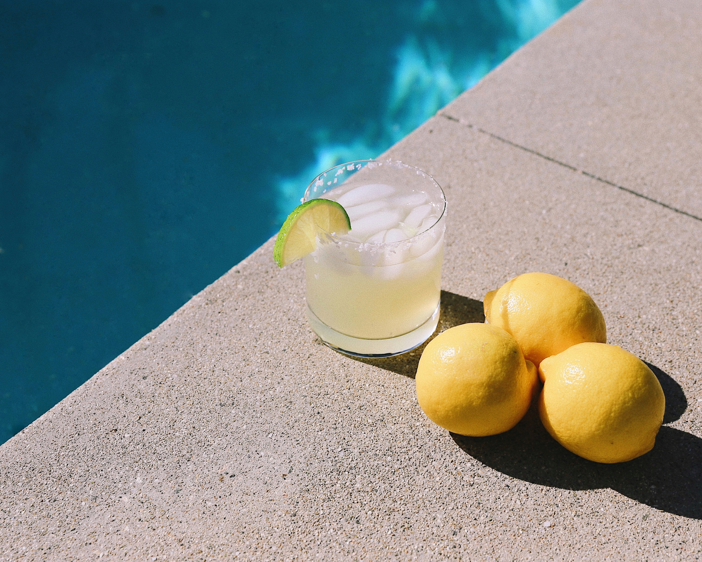

Margarita

What's more refreshing than a cold classic margarita!
At it's most basic a margarita has three ingredients: tequila, Cointreau, and fresh lime juice.
Hold on a minute while I go make one, then we can get back to recipe...
Okay, I'm back! Now for the recipe.
Ingredients
- 2 oz blanco tequila
- 1/2 oz Cointreau (or orange liqueur)
- 1 oz lime juice, freshly squeezed
- 1/2 oz agave syrup
- (Optional garnish) lime wheel and kosher salt
Steps
- Add tequila, orange liqueur, lime juice and agave syrup to a cocktail shaker filled with ice, and shake
until well-chilled.
- Strain into a rocks glass over fresh ice.
- Garnish with a lime wheel and kosher salt rim (optional).